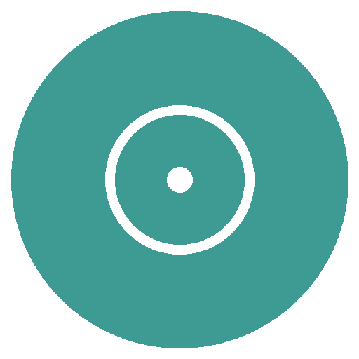

Sign in to follow your IVF care
We'll text or email you a one-time code. Your information is private and only visible to you and your care team.
Here's what's coming up and how you're doing.
Your upcoming and past visits.
Results appear here only after a clinician has reviewed and released them.
Updates from your clinic, and a way to ask them to call you back.
Your plan, your team, your forms and how this app works.
A general outline of your cycle, so you know what's ahead.
The people looking after you on your journey.
How to use each one. Always follow the plan your doctor gave you.
Short, clear guides for each step — written by your clinic.
What the injections do
What to expect on the day
How fertilisation works
The day of your transfer
Wellbeing & the wait
Things people often ask
IVF asks a lot of you — emotionally and physically. Here are gentle ways to care for yourself along the way.
The forms you've signed, kept here for your reference.
Who you're signed in as, and how your information is kept safe.
Caring for your journey to parenthood.
An honest note on what this is — and isn't — today.
IVF Assistant — Patient Portal · Demo build · updated 22 Jun 2026